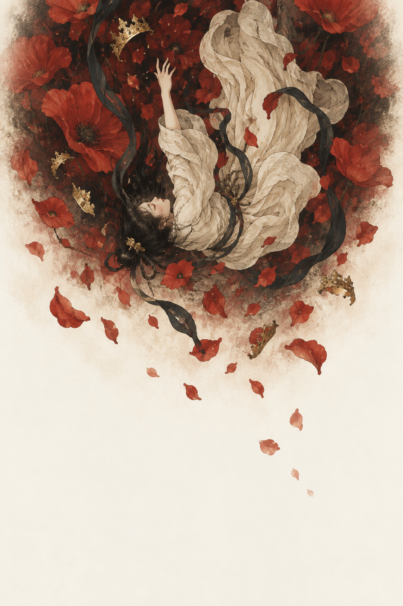

나의 하루나의 달력
오늘, 당신에게.
채우지 않은 시간도
나의 몫.
오늘은 나를 위해 작은 여백을 남겨보세요.
나를 돌보는 일 · 예시 안내

오늘, 당신에게.
오늘은 나를 위해 작은 여백을 남겨보세요.
이번 주, 남은 날 중 추천하는 하루
현재 날짜별 안내는 관심사와 요일에 따라 구성한 예시입니다. 실제 사주를 계산하거나 미래의 좋고 나쁨을 예측한 결과는 아닙니다. 관심사만 이 기기에 저장하며, 포스텔러의 운세 데이터는 사용하지 않습니다.

이름에서 나에게
붙잡고 있던 이름을 하나씩 놓아봅니다.
그 아래에도, 나는 남아 있습니다.
THE
THRESHOLD
관계와 나
별일 아닌 부탁이었습니다. 이번 한 번만 맡아달라는 말에 그러겠다고 했습니다. 집으로 돌아오는 길에야, 오늘도 내 일을 뒤로 미뤘다는 생각이 들었습니다.
좋은 동료, 착한 딸, 이해심 많은 사람. 그 이름들이 싫었던 것은 아닙니다. 다만 그 이름으로 불리는 동안, 싫다는 말을 어디에 두었는지 잊었습니다.
이난나가 문 앞에서 내려놓은 것을, 이 기록은 오래 입은 역할에 겹쳐 읽습니다. 왕관을 벗는 일은 머리를 잃는 일이 아닙니다. 누군가의 기대를 내려놓는다고 해서, 그 사람을 소중히 여겼던 마음까지 사라지지는 않습니다.
이번에는 대답을 조금 늦춰봅니다. “내 일정을 보고 말해줄게.” 관계를 끊겠다는 선언 대신, 내 쪽의 사정을 확인할 짧은 시간을 마련하는 것입니다.
지키고 싶은 관계와 계속하고 싶지 않은 역할을 따로 적어봅니다. 두 목록이 반드시 같지는 않을 것입니다.
예전에 살던 동네를 찾아갔습니다. 가게 몇 개가 바뀌었고, 자주 걷던 골목은 생각보다 짧았습니다. 그토록 돌아오고 싶었는데, 막상 도착하니 할 일이 없었습니다.
그리운 풍경 속에는 그곳에서 살던 내가 함께 있습니다. 지금보다 덜 지쳐 있던 얼굴, 아직 선택하지 않은 일들. 주소를 되찾는다고 그 시간까지 돌아오는 것은 아닙니다.
이 기록에서 귀환은 오래된 자리를 되찾는 일보다, 지금의 몸으로 머물 곳을 고르는 일에 가깝습니다. 그때는 좋았지만 지금은 감당하기 어려운 것, 그때는 몰랐지만 이제는 필요한 것을 나누어봅니다.
떠나온 곳을 좋아하는 마음은 남겨도 됩니다. 그 마음이 다음 주소까지 정하게 둘 필요는 없습니다.
돌아가고 싶은 곳과 지금 머물 수 있는 곳은 어디서 갈라집니까.
심층 기록 · 9,900원 예시 가격
오래 준비한 일이 끝났습니다. 계획대로 되지 않은 쪽으로요. 책상을 비우다 보니 버릴 것은 금방 골라졌는데, 가져갈 것은 선뜻 떠오르지 않았습니다.
그 일을 하며 익힌 감각, 어려운 부탁을 함께 나눈 사람, 이제는 피하고 싶은 방식을 알아보는 눈. 성과라고 부르지 않았을 뿐, 없어진 것은 아니었습니다.
여기서 길가메시의 성벽은 남은 세계를 바라보는 장면으로 읽힙니다. 원하던 답을 얻지 못한 뒤에도, 손을 댈 수 있는 돌은 그 자리에 있습니다.
커다란 새 계획을 세우기 전에, 이번 주에 다시 쓸 수 있는 것부터 적습니다. 익숙한 기술 하나, 연락할 사람 하나, 비워둘 수 있는 시간 하나. 처음 놓을 돌은 그 정도 크기여도 됩니다.
남은 것 가운데 내 손으로 다시 다룰 수 있는 것은 무엇입니까.
심층 기록 · 9,900원 예시 가격
지나온 장면들을 나란히 놓으면
어디에도 닿지 못한 줄 알았던 날들도,
지금의 나에게 이어져 있습니다.
YOUR ARCHIVE
나의 신화 · 샘플
처음의 항로부터, 아직 쓰이지 않은 장까지.
다시 읽고 싶은 물음에 책갈피를 꽂아두세요.
THE FIRST PAGE